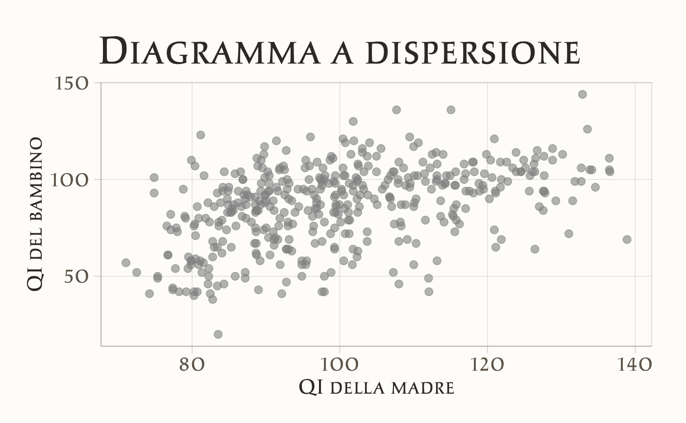
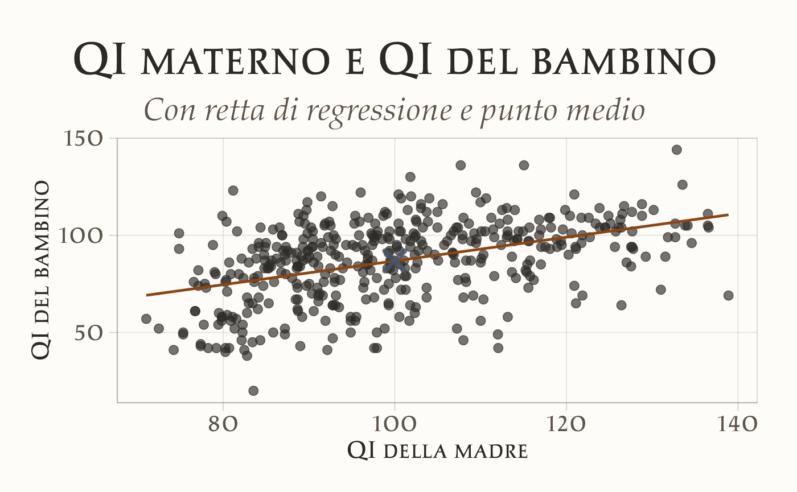
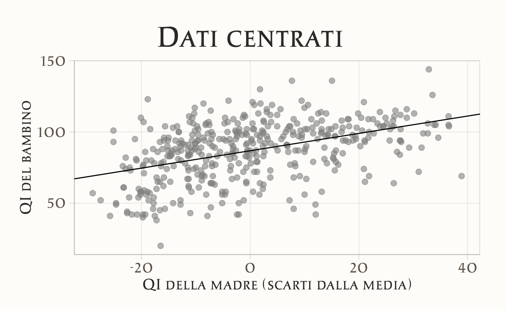
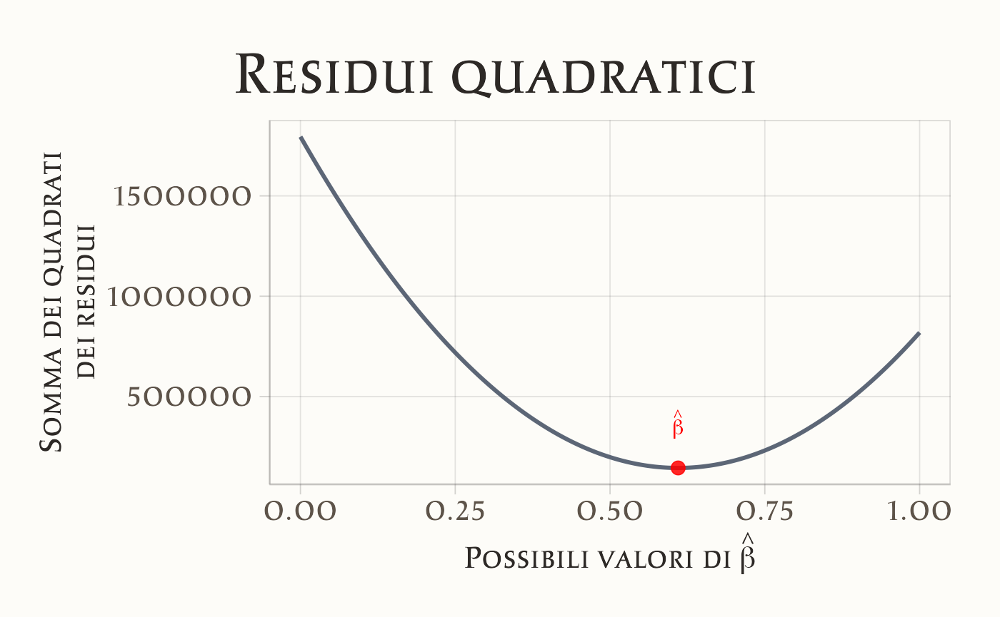
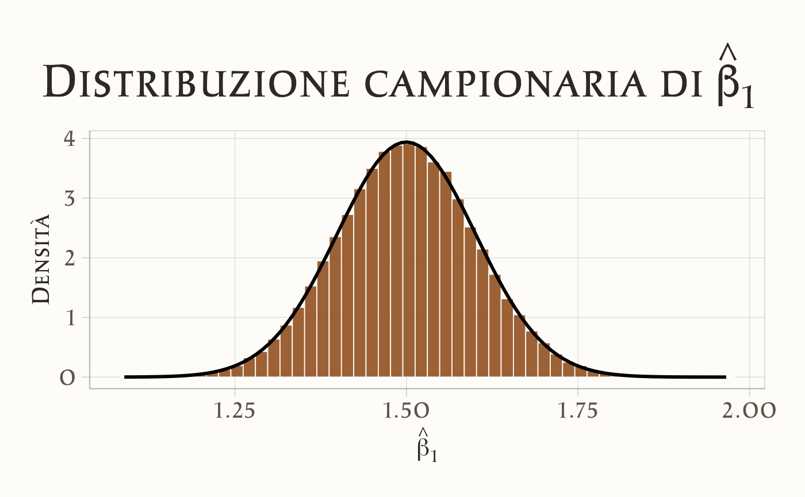

here::here("code", "_common.R") |>
source()
# Load packages
if (!requireNamespace("pacman")) install.packages("pacman")
pacman::p_load(broom)24 La regressione lineare bivariata
Introduzione
La regressione lineare è uno degli strumenti più diffusi della statistica applicata. La sua funzione è descrivere come varia, in media, una variabile quantitativa — detta dipendente e indicata con \(Y\) — al variare di un’altra variabile quantitativa — detta indipendente e indicata con \(X\). Il modello esprime quindi una relazione media tra due grandezze, lasciando spazio a una quota di variabilità residua inevitabile nei dati psicologici e sociali.
In psicologia, la regressione lineare è stata adottata in modo estensivo per mettere in relazione costrutti teorici, per costruire previsioni empiricamente fondate, o per verificare ipotesi sulle dinamiche cognitive, emotive o sociali. Proprio per la sua pervasività, questo strumento rappresenta spesso la “lingua comune” della ricerca quantitativa.
È importante, tuttavia, collocare la regressione nel giusto contesto epistemologico. Si tratta di un modello fenomenologico, che descrive associazioni tra variabili ma non fornisce di per sé spiegazioni sui meccanismi che le hanno generate. Inoltre, il modello si fonda su precise assunzioni matematiche e statistiche: comprenderle è fondamentale per utilizzare la regressione in modo consapevole e per riconoscerne i limiti. Solo così diventa possibile distinguere ciò che il modello ci dice davvero dai significati che rischiamo di attribuirgli indebitamente.
Panoramica del capitolo
- Il modello di regressione lineare secondo l’approccio frequentista.
- La stima dei coefficienti del modello utilizzando il metodo dei minimi quadrati.
- L’interpretazione dei coefficienti dei minimi quadrati.
- Il calcolo e l’interpretazione dell’indice di determinazione (\(R^2\)).
- L’inferenza frequentista sui coefficienti dei minimi quadrati.
24.1 La relazione tra \(X\) e \(Y\)
Il caso più semplice è il modello di regressione lineare bivariato, che descrive la relazione tra due variabili. L’idea di base è che, se \(X\) e \(Y\) sono associate, possiamo approssimare la loro relazione con una retta che indica come \(Y\) tende a variare al variare di \(X\).
La formulazione classica (frequentista) del modello è:
\[ y_i = a + b x_i + e_i, \quad i = 1, \dots, n, \] dove:
- \(a\) (intercetta): valore atteso di \(Y\) quando \(X = 0\),
- \(b\) (pendenza): variazione attesa di \(Y\) per ogni unità di aumento in \(X\),
- \(e_i\) (errore residuo): differenza tra il valore osservato \(y_i\) e il valore previsto dal modello.
Graficamente, questa equazione corrisponde a una retta di regressione che rappresenta la miglior approssimazione lineare dei dati secondo il criterio dei minimi quadrati. Nella realtà, i punti raramente giacciono tutti sulla retta: le differenze sono catturate dagli errori residui.
La regressione, quindi, non predice esattamente ogni osservazione, ma descrive la tendenza media nella popolazione. Ad esempio, se \(b = 2\), significa che — in media — un aumento di 1 unità in \(X\) è associato a un aumento di 2 unità in \(Y\). Ciò non implica che ogni caso segua la regola in modo perfetto, ma che l’andamento complessivo sia coerente con questa relazione.
L’obiettivo dell’analisi è stimare i parametri \(a\), \(b\) e \(\sigma^2\) (varianza residua) dai dati, utilizzando il metodo dei minimi quadrati (OLS) o, più in generale, il principio di massima verosimiglianza. Nel paradigma frequentista, questi parametri sono considerati quantità fisse ma sconosciute, e l’incertezza riguarda esclusivamente gli errori di misura o variabilità non spiegata.
24.2 A cosa serve la regressione?
Secondo Gelman et al. (2021), la regressione lineare può essere applicata in almeno quattro contesti principali:
-
Previsione – Stimare valori futuri di una variabile di interesse o classificare casi in base a probabilità.
- Esempi: prevedere punteggi futuri a un test; monitorare il benessere psicologico in studi longitudinali; classificare individui in base alla probabilità di successo in un compito cognitivo.
-
Esplorazione delle associazioni – Identificare e quantificare le relazioni tra predittori e risultato.
- Esempi: analizzare i tratti di personalità legati alla resilienza allo stress; studiare la relazione tra stili di attaccamento infantile e competenze relazionali adulte; valutare l’effetto di fattori socio-economici sullo sviluppo cognitivo.
-
Estrapolazione – Estendere i risultati a contesti o popolazioni non direttamente osservati.
- Esempi: stimare l’efficacia di una terapia testata su studenti universitari nella popolazione generale; prevedere l’impatto di un intervento scolastico su un intero distretto a partire da dati di scuole pilota.
-
Inferenza causale – Stimare effetti di trattamenti o interventi, solo se supportata da un disegno di ricerca adeguato (ad es., randomizzazione).
- Esempi: valutare l’efficacia di un programma di mindfulness sull’ansia; stimare l’impatto di una psicoterapia sul disturbo post-traumatico da stress; determinare l’effetto di un intervento educativo su una popolazione diversificata.
Nota importante: in tutti i contesti, il modello deve includere tutte le variabili rilevanti per il fenomeno studiato. L’omissione di variabili confondenti può distorcere le stime — problema noto come errore di specificazione del modello. Ad esempio, in uno studio sull’efficacia di una psicoterapia per la depressione, fattori come età, condizioni di salute preesistenti e supporto sociale devono essere inclusi nell’analisi per evitare interpretazioni fuorvianti.
24.2.1 Tipologie di regressione
L’analisi di regressione può essere classificata in base al numero di variabili coinvolte, distinguendosi in tre principali categorie che riflettono diversi livelli di complessità.
La regressione bivariata rappresenta la forma più elementare, in cui viene analizzata la relazione tra un unico predittore e una sola variabile esito. La sua semplicità la rende un punto di partenza ideale per comprendere la logica fondamentale della regressione, poiché consente di apprendere i concetti di base senza l’onere di complicazioni matematiche eccessive.
Un livello di complessità superiore è dato dalla regressione multipla, nella quale un unico esito viene modellato utilizzando molteplici predittori. Questo approccio permette di esaminare l’effetto simultaneo di diverse variabili indipendenti, richiedendo un’attenta interpretazione dei parametri stimati.
Infine, la regressione multivariata costituisce il caso più generale, in cui più variabili esito vengono analizzate simultaneamente in relazione a uno o più predittori. Questo tipo di modellazione richiede calcoli statistici più articolati e rappresenta lo strumento più potente e complesso tra le tre tipologie.
Il percorso di apprendimento ideale inizia dalla regressione bivariata, poiché fornisce le basi concettuali e metodologiche che possono successivamente essere estese verso modelli più sofisticati. La comprensione dei principi fondamentali acquisiti nel caso semplice è infatti un prerequisito essenziale per affrontare le sfide interpretative e computazionali poste dalle regressioni multiple e multivariate.
24.3 La predizione dell’intelligenza
Per illustrare il modello di regressione secondo l’approccio frequentista, utilizzeremo un dataset reale: i dati kidiq tratti dal National Longitudinal Survey of Youth (Gelman et al., 2021). Questi dati riguardano un campione di donne americane e i loro figli, con particolare attenzione a due variabili fondamentali per la nostra analisi: il punteggio cognitivo del bambino (kid_score) e il quoziente intellettivo della madre (mom_iq). L’obiettivo principale consiste nell’esaminare se - e in che misura - l’intelligenza materna possa essere considerata un fattore predittivo delle capacità cognitive del bambino.
24.3.1 Esplorazione dei dati
Importiamo i dati in R:
Esaminiamo le prime righe del data frame:
head(kidiq)
#> kid_score mom_hs mom_iq mom_work mom_age
#> 1 65 1 121.1 4 27
#> 2 98 1 89.4 4 25
#> 3 85 1 115.4 4 27
#> 4 83 1 99.4 3 25
#> 5 115 1 92.7 4 27
#> 6 98 0 107.9 1 18Un diagramma a dispersione per i dati di questo campione suggerisce la presenza di un’associazione positiva tra l’intelligenza del bambino (kid_score) e l’intelligenza della madre (mom_iq).
ggplot(kidiq, aes(x = mom_iq, y = kid_score)) +
geom_point(alpha = 0.6) +
labs(x = "QI della madre", y = "QI del bambino") +
ggtitle("Diagramma a dispersione") 
24.4 Il modello teorico
Il modello di regressione lineare bivariata è:
\[ y_i = a + b x_i + e_i, \quad i = 1, \dots, n \] dove:
- \(a\): intercetta (valore atteso di \(y\) quando \(x = 0\));
- \(b\): pendenza (variazione attesa di \(y\) per +1 in \(x\));
- \(e_i\): errore residuo (scarto tra osservato e predetto).
Nel nostro caso:
- \(y = \text{`kid\_score`}\) (QI del bambino)
- \(x = \text{`mom\_iq`}\) (QI della madre)
La componente deterministica \(\hat{y}_i = a + b x_i\) rappresenta la parte prevedibile di \(y\) in funzione di \(x\). La componente aleatoria \(e_i = y_i - \hat{y}_i\) cattura ciò che il modello non spiega.
24.4.1 Stima del modello di regressione
Calcoliamo i coefficienti della retta di regressione utilizzando la funzione lm.
# Modello di regressione lineare
mod <- lm(kid_score ~ mom_iq, data = kidiq)Esaminiamo i risultati:
# Coefficienti stimati
coef(mod)
#> (Intercept) mom_iq
#> 25.80 0.61In generale, molte rette possono approssimare la nube di punti, ma il modello di regressione impone vincoli:
- la retta deve passare per il punto medio \((\bar{x}, \bar{y})\);
- deve minimizzare la somma dei quadrati dei residui (SSE).
# Calcola i valori medi
mean_x <- mean(kidiq$mom_iq, na.rm = TRUE)
mean_y <- mean(kidiq$kid_score, na.rm = TRUE)
# Grafico nello stile "manuscript"
ggplot(kidiq, aes(x = mom_iq, y = kid_score)) +
geom_point(alpha = 0.65, color = css_palette$text_primary) +
geom_smooth(
method = "lm", se = FALSE,
color = css_palette$accent_warm,
linewidth = 0.8
) +
annotate(
"point",
x = mean_x, y = mean_y,
color = css_palette$illumination_blue,
size = 4.5, shape = 4, stroke = 2.2
) +
labs(
x = "QI della madre",
y = "QI del bambino",
title = stringr::str_wrap("QI materno e QI del bambino", width = 50),
subtitle = "Con retta di regressione e punto medio"
) +
theme_manuscript()
24.4.2 Interpretazione
Il coefficiente \(a\) indica l’intercetta della retta di regressione nel diagramma a dispersione. Questo valore rappresenta il punto in cui la retta di regressione interseca l’asse \(y\) del sistema di assi cartesiani. Tuttavia, in questo caso specifico, il valore di \(a\) non è di particolare interesse poiché corrisponde al valore della retta di regressione quando l’intelligenza della madre è pari a 0, il che non ha senso nella situazione reale. Successivamente, vedremo come è possibile trasformare i dati per fornire un’interpretazione utile del coefficiente \(a\).
Invece, il coefficiente \(b\) indica la pendenza della retta di regressione, ovvero di quanto aumenta (se \(b\) è positivo) o diminuisce (se \(b\) è negativo) la retta di regressione in corrispondenza di un aumento di 1 punto della variabile \(x\). Nel caso specifico del QI delle madri e dei loro figli, il coefficiente \(b\) ci indica che un aumento di 1 punto del QI delle madri è associato, in media, a un aumento di 0.61 punti del QI dei loro figli.
In pratica, il modello di regressione lineare cerca di prevedere le medie dei punteggi del QI dei figli in base al QI delle madri. Ciò significa che non è in grado di prevedere esattamente il punteggio di ciascun bambino in funzione del QI della madre, ma solo una stima della media dei punteggi dei figli quando il QI delle madri aumenta o diminuisce di un punto.
Il coefficiente \(b\) ci dice di quanto aumenta (o diminuisce) in media il QI dei figli per ogni unità di aumento (o diminuzione) del QI della madre. Nel nostro caso, se il QI della madre aumenta di un punto, il QI dei figli aumenta in media di 0.61 punti.
È importante comprendere che il modello statistico di regressione lineare non è in grado di prevedere il valore preciso di ogni singolo bambino, ma solo una stima della media dei punteggi del QI dei figli quando il QI delle madri aumenta o diminuisce. Questa stima è basata su una distribuzione di valori possibili che si chiama distribuzione condizionata \(p(y \mid x_i)\).
Una rappresentazione grafica del valore predetto dal modello di regressione, \(\hat{y}_i = a + bx_i\) è stato fornito in precedenza. Il diagramma presenta ciascun valore \(\hat{y}_i = a + b x_i\) in funzione di \(x_i\). I valori predetti dal modello di regressione sono i punti che stanno sulla retta di regressione.
24.4.3 Centrare le variabili
In generale, per variabili a livello di scala ad intervalli, l’intercetta del modello di regressione lineare non ha un’interpretazione utile. Questo perché l’intercetta indica il valore atteso di \(y\) quando \(x = 0\), ma in caso di variabili a scala di intervalli, il valore “0” di \(x\) è arbitrario e non corrisponde ad un “assenza” della variabile \(x\). Ad esempio, un QI della madre pari a 0 non indica un’assenza di intelligenza, ma solo un valore arbitrario del test usato per misurare il QI. Quindi, sapere il valore medio del QI dei bambini quando il QI della madre è 0 non è di alcun interesse.
Centrando \(x\) attorno alla sua media otteniamo un’intercetta interpretabile: il valore medio di kid_score quando mom_iq è nella media del campione.
kidiq <- kidiq %>%
mutate(xd = mom_iq - mean(mom_iq))Se ora usiamo le coppie di osservazioni \((xd_i, y_i)\), il diagramma a dispersione assume la forma seguente.

In sostanza, abbiamo applicato una trasformazione ai dati, traslando tutti i punti del grafico lungo l’asse delle ascisse in modo che la media dei valori \(x\) risulti pari a zero. Questa operazione non ha alterato la distribuzione o la forma complessiva della nuvola di punti, ma ha semplicemente modificato l’origine del sistema di riferimento sull’asse \(x\).
La pendenza della retta di regressione che mette in relazione \(x\) e \(y\) rimane invariata, sia per i dati originali che per quelli trasformati. L’unico parametro che subisce una modifica è il valore dell’intercetta della retta di regressione, che acquisisce in questo modo un’interpretazione più intuitiva e significativa dal punto di vista sostanziale.
Nell’output del modello, l’intercetta rappresenta il valore predetto della variabile dipendente \(y\) quando la variabile indipendente \(x\) assume esattamente il suo valore medio campionario. Nel caso specifico dell’esempio, l’intercetta corrisponde al punteggio atteso del QI del bambino (kid_score) quando il quoziente intellettivo della madre (mom_iq) è pari alla media osservata nel campione di riferimento.
24.5 Metodo dei minimi quadrati
Nel modello di regressione bivariata, i coefficienti \(a\) (intercetta) e \(b\) (pendenza) vengono stimati scegliendo la retta che minimizza la somma dei quadrati dei residui (Sum of Squared Errors, SSE):
\[ e_i = y_i - (a + b x_i), \quad SSE = \sum_{i=1}^n e_i^2. \] Questa scelta equivale, sotto l’assunzione di errori normali con media zero e varianza costante, alla stima di massima verosimiglianza.
La minimizzazione dell’SSE porta alle equazioni normali, la cui soluzione ha forma chiusa:
\[ b = \frac{\mathrm{Cov}(x, y)}{\mathrm{Var}(x)}, \quad a = \bar{y} - b \,\bar{x} , \] dove:
- \(\bar{x}\) e \(\bar{y}\) sono le medie campionarie;
- \(\mathrm{Cov}(x,y)\) è la covarianza tra \(x\) e \(y\);
- \(\mathrm{Var}(x)\) è la varianza di \(x\).
Queste formule assicurano che:
- La retta passa per il punto medio \((\bar{x}, \bar{y})\) della nube di punti.
- La pendenza \(b\) quantifica la variazione media di \(y\) per un’unità di incremento di \(x\).
- L’intercetta \(a\) è il valore previsto di \(y\) quando \(x=0\) (interpretazione utile solo se \(x=0\) è significativo).
Esempio in R
I risultati replicano quelli ottenuti in precedenza con lm().
24.5.1 Residui
Il residuo, ovvero la componente di ciascuna osservazione \(y_i\) che non viene predetta dal modello di regressione, corrisponde alla distanza verticale tra il valore \(y_i\) osservato e il valore \(\hat{y}_i\) predetto dal modello di regressione:
\[ e_i = y_i - (a + b x_i). \]
Per fare un esempio numerico, consideriamo il punteggio osservato del QI del primo bambino.
kidiq$kid_score[1]
#> [1] 65Il QI della madre è
kidiq$mom_iq[1]
#> [1] 121Per questo bambino, il valore predetto dal modello di regressione è
a + b * kidiq$mom_iq[1]
#> [1] 161L’errore che compiamo per predire il QI del bambino utilizzando il modello di regressione (ovvero, il residuo) è
kidiq$kid_score[1] - (a + b * kidiq$mom_iq[1])
#> [1] -95.7Per tutte le osservazioni abbiamo
res <- kidiq$kid_score - (a + b * kidiq$mom_iq)È una proprietà del modello di regressione (calcolato con il metodo dei minimi quadrati) che la somma dei residui sia uguale a zero.
sum(res)
#> [1] -26473Questo significa che ogni valore osservato \(y_i\) viene scomposto dal modello di regressione in due componenti distinte. La componente deterministica \(\hat{y}_i\), che è predicibile da \(x_i\), è data da \(\hat{y}_i = a + b x_i\). Il residuo, invece, è dato da \(e_i = y_i - \hat{y}_i\). La somma di queste due componenti, ovviamente, riproduce il valore osservato.
# Creazione di un data frame con i valori calcolati
df <- data.frame(
kid_score = kidiq$kid_score,
mom_iq = kidiq$mom_iq,
y_hat = a + b * kidiq$mom_iq,
e = kidiq$kid_score - (a + b * kidiq$mom_iq),
y_hat_plus_e = (a + b * kidiq$mom_iq) + (kidiq$kid_score - (a + b * kidiq$mom_iq))
)
# Visualizzazione dei primi 6 valori
head(df)
#> kid_score mom_iq y_hat e y_hat_plus_e
#> 1 65 121.1 161 -95.7 65
#> 2 98 89.4 141 -43.3 98
#> 3 85 115.4 157 -72.2 85
#> 4 83 99.4 147 -64.5 83
#> 5 115 92.7 143 -28.4 115
#> 6 98 107.9 153 -54.6 9824.5.2 Illustrazione del metodo dei minimi quadrati
Per stimare i coefficienti \(a\) e \(b\), possiamo minimizzare la somma dei quadrati dei residui tra i valori osservati \(y_i\) e quelli previsti \(a + b x_i\).
Iniziamo con il creare una griglia per i valori di \(b\). Supponiamo che il valore di \(a\) sia noto (\(a = 25.79978\)). Usiamo R per creare una griglia di valori possibili per \(b\).
# Griglia di valori per b
b_grid <- seq(0, 1, length.out = 1001)
a <- 25.79978 # Intercetta notaDefiniamo ora una funzione che calcola la somma dei quadrati dei residui (\(SSE\)) per ciascun valore di \(b\).
# Funzione per la somma dei quadrati dei residui
sse <- function(a, b, x, y) {
sum((y - (a + b * x))^2)
}Applichiamo la funzione sse alla griglia di valori \(b\) per calcolare la somma dei quadrati dei residui per ogni valore di \(b\).
# Calcolo di SSE per ciascun valore di b
sse_vals <- sapply(
b_grid,
function(b) sse(a, b, kidiq$mom_iq, kidiq$kid_score)
)-
sapply:- È una funzione di R che applica una funzione ad ogni elemento di un vettore (o lista) e restituisce i risultati in un vettore.
- Qui, applica la funzione
ssea ciascun valore di \(b\) contenuto inb_grid.
-
function(b):- È una funzione anonima definita al volo per specificare come calcolare \(SSE\) per ciascun valore di \(b\).
- All’interno, viene chiamata la funzione
sse(a, b, x, y)con i seguenti parametri:-
a: il valore dell’intercetta (fissato in precedenza o noto). -
b: il valore corrente nella grigliab_grid. -
x: la variabile indipendente del dataset (kidiq$mom_iq). -
y: la variabile dipendente del dataset (kidiq$kid_score).
-
- Il risultato è un vettore,
sse_vals, che contiene i valori di \(SSE\) corrispondenti a ciascun valore di \(b\) inb_grid.
Tracciamo un grafico che mostra la somma dei quadrati dei residui (\(SSE\)) in funzione dei valori di \(b\), evidenziando il minimo.
# Identificazione del valore di b che minimizza SSE
b_min <- b_grid[which.min(sse_vals)]
# Creazione del dataframe per ggplot
dat <- data.frame(b_grid = b_grid, sse_vals = sse_vals)
# Genera il grafico
ggplot(dat, aes(x = b_grid, y = sse_vals)) +
geom_line(linewidth = 1) +
annotate(
"point", x = b_min, y = min(sse_vals),
color = "red", size = 3
) + # Punto minimo
labs(
x = expression(paste("Possibili valori di ", hat(beta))),
y = "Somma dei quadrati\ndei residui",
title = "Residui quadratici"
) +
annotate(
"text", x = b_min, y = min(sse_vals),
label = expression(hat(beta)), color = "red", vjust = -1, hjust = 0.5
)
Infine, identifichiamo il valore di \(b\) che minimizza la somma dei quadrati dei residui.
b_min
#> [1] 0.61Con questa simulazione, abbiamo stimato il coefficiente \(b\) minimizzando la somma dei quadrati dei residui.
Questo approccio può essere esteso per stimare simultaneamente entrambi i coefficienti (\(a\) e \(b\)) utilizzando metodi di ottimizzazione più avanzati, come optim in R.
Questa simulazione illustra come, tramite il metodo dei minimi quadrati, sia possibile stimare i parametri di un modello bivariato di regressione.
24.6 L’errore standard della regressione
L’errore standard della stima \(s_e\) misura la deviazione media dei dati dalla retta:
\[ \sqrt{\frac{1}{n-2} \sum_{i=1}^n \big(y_i - (\hat{a} + \hat{b}x_i)\big)^2}, \tag{24.2}\]
L’indice \(s_e\) possiede la stessa unità di misura di \(y\) ed è una stima della deviazione standard dei residui nella popolazione.
In R:
# Calcolo dei residui
e <- kidiq$kid_score - (a + b * kidiq$mom_iq)
# Mostriamo i primi 10 residui
head(e, 10)
#> [1] -34.68 17.69 -11.22 -3.46 32.63 6.38 -41.52 3.86 26.41 11.21Calcoliamo il valore medio assoluto dei residui per avere un’indicazione della deviazione media rispetto alla retta di regressione.
L’errore standard della stima \(s_e\) si calcola come la radice quadrata della somma dei quadrati dei residui divisa per \(n-2\):
Notiamo che il valore medio assoluto dei residui e l’errore standard \(s_e\) non sono identici, ma hanno lo stesso ordine di grandezza. \(s_e\) è una misura più rigorosa della deviazione standard dei residui.
Questa analisi dimostra come \(s_e\) consenta di valutare quanto le previsioni del modello si discostino (in media) dai dati osservati.
24.7 L’indice di determinazione
Nell’approccio frequentista, la qualità dell’adattamento si apprezza osservando l’indice di determinazione \(R^2\), che indica quanta parte della varianza di \(y\) viene spiegata dal modello, e analizzando i residui: eventuali pattern sistematici nei residui possono segnalare che la struttura scelta non coglie tutte le caratteristiche dei dati o che esistono violazioni delle ipotesi (linearità, omoscedasticità, normalità degli errori). Un esame congiunto di \(R^2\) e residui aiuta a diagnosticare e, se necessario, migliorare il modello.
L’indice di determinazione viene calcolato utilizzando un’importante proprietà del modello di regressione, ovvero la scomposizione della varianza della variabile dipendente \(y\) in due componenti: la varianza spiegata dal modello e la varianza residua.
Per una generica osservazione \(x_i, y_i\), la deviazione di \(y_i\) rispetto alla media \(\bar{y}\) può essere espressa come la somma di due componenti: il residuo \(e_i=y_i- \hat{y}_i\) e lo scarto di \(\hat{y}_i\) rispetto alla media \(\bar{y}\):
\[ y_i - \bar{y} = (y_i- \hat{y}_i) + (\hat{y}_i - \bar{y}) = e_i + (\hat{y}_i - \bar{y}). \]
La varianza totale di \(y\) può quindi essere scritta come:
\[ \sum_{i=1}^{n}(y_i - \bar{y})^2 = \sum_{i=1}^{n}(e_i + (\hat{y}_i - \bar{y}))^2. \]
Sviluppando il quadrato e sommando, si ottiene:
\[ \sum_{i=1}^{n}(y_i - \bar{y})^2 = \sum_{i=1}^{n}(y_i - \hat{y}_i)^2 + \sum_{i=1}^{n}(\hat{y}_i - \bar{y})^2. \tag{24.3}\]
Il primo termine rappresenta la varianza residua, mentre il secondo termine rappresenta la varianza spiegata dal modello. Questa scomposizione della devianza va sotto il nome di teorema della scomposizione della devianza.
Questa scomposizione viene utilizzata per calcolare l’indice di determinazione \(R^2\), che fornisce una misura della bontà di adattamento del modello ai dati del campione. L’indice di determinazione \(R^2\) è definito come il rapporto tra la varianza spiegata e la varianza totale:
\[ R^2 = \frac{\sum_{i=1}^{n}(\hat{y}_i - \bar{y})^2}{\sum_{i=1}^{n}(y_i - \bar{y})^2}. \tag{24.4}\]
Questo indice varia tra 0 e 1 e indica la frazione di varianza totale di \(y\) spiegata dal modello di regressione lineare. Un valore alto di \(R^2\) indica che il modello di regressione lineare si adatta bene ai dati, in quanto una grande parte della varianza di \(y\) è spiegata dalla variabile indipendente \(x\).
Per l’esempio in discussione, possiamo calcolare la devianza totale, la devianza spiegata e l’indice di determinazione \(R^2\) come segue:
La devianza totale misura la variabilità complessiva dei punteggi osservati \(y\) rispetto alla loro media:
La devianza spiegata misura la variabilità che il modello è in grado di spiegare, considerando i valori predetti \(a + b x\):
L’indice \(R^2\) è il rapporto tra la devianza spiegata e la devianza totale, e indica la frazione della variabilità totale che è spiegata dal modello di regressione:
# Indice di determinazione
R2 <- dev_r / dev_t
round(R2, 3)
#> [1] 0.201Per verificare i calcoli, utilizziamo il modello di regressione lineare in R e leggiamo \(R^2\) direttamente dal sommario del modello:
Il risultato mostra che circa il 20% della variabilità nei punteggi del QI dei bambini è spiegabile conoscendo il QI delle madri. Questo significa che il modello cattura una porzione rilevante della relazione, ma lascia anche spazio a fattori non inclusi nel modello che influenzano il QI dei bambini.
24.8 Inferenza sui coefficienti
L’inferenza statistica sui coefficienti di regressione richiede la definizione della distribuzione campionaria dei coefficienti di regressione. Il modello di regressione bivariata (o lineare semplice) è:
\[Y_i = \beta_0 + \beta_1 X_i + \varepsilon_i,\] dove \(Y_i\) è la variabile dipendente per l’osservazione \(i\), \(X_i\) è la variabile indipendente, \(\beta_0\) è l’intercetta (parametro ignoto), \(\beta_1\) è il coefficiente angolare (il parametro che ci interessa stimare), e \(\varepsilon_i\) è il termine di errore per l’osservazione \(i\).
Nell’inferenza, il nostro obiettivo è stimare i parametri ignoti \(\beta_0\) e \(\beta_1\) usando i dati campionari disponibili. Il metodo più comune è quello dei Minimi Quadrati Ordinari (OLS), che ci fornisce gli stimatori \(\hat{\beta}_0\) e \(\hat{\beta}_1\) (spesso indicati semplicemente con \(b_0\) e \(b_1\)). Lo stimatore per il coefficiente angolare è dato dalla formula:
\[\hat{\beta}_1 = b_1 = \frac{\sum_{i=1}^n (X_i - \bar{X})(Y_i - \bar{Y})}{\sum_{i=1}^n (X_i - \bar{X})^2}.\]
24.8.1 Cos’è la distribuzione campionaria di \(b_1\)?
Lo stimatore \(b_1\) è una variabile casuale. Perché? Perché il suo valore dipende dal campione casuale di dati \((X_i, Y_i)\) che abbiamo estratto dalla popolazione.
Immaginiamo di poter ripetere il processo di campionamento e stima del modello infinite volte:
- Estraiamo un campione casuale di dimensione \(n\).
- Calcoliamo lo stimatore \(b_1\) per quel campione.
- Registriamo il valore di \(b_1\).
- Estraiamo un nuovo campione casuale (indipendentemente dal primo).
- Calcoliamo il “nuovo” \(b_1\).
- Registriamo il valore.
- … e così via, per infinite volte.
La distribuzione campionaria di \(b_1\) è la distribuzione di probabilità di tutti i valori di \(b_1\) che otterremmo da questi infiniti campioni casuali di dimensione \(n\) estratti dalla stessa popolazione.
24.8.2 Assunzioni di Gauss–Markov e distribuzione campionaria della pendenza
Per il modello di regressione bivariata
\[ Y_i = \beta_0 + \beta_1 X_i + \varepsilon_i, \] lo stimatore OLS della pendenza è
\[ \hat{\beta}_1 = \frac{\sum_{i=1}^n (X_i - \bar{X})(Y_i - \bar{Y})}{\sum_{i=1}^n (X_i - \bar{X})^2}. \] Questo è una variabile casuale, perché il suo valore dipende dal campione estratto.
24.8.2.1 1. Assunzioni di Gauss–Markov
Affinché \(\hat{\beta}_1\) sia non distorto (unbiased) e BLUE (Best Linear Unbiased Estimator), devono valere:
Linearità nei parametri La relazione media tra \(Y\) e \(X\) è lineare: \(E(Y_i \mid X_i) = \beta_0 + \beta_1 X_i\).
Campionamento casuale e indipendenza Le osservazioni \((X_i,Y_i)\) sono indipendenti e identicamente distribuite.
Esogeneità Gli errori hanno media nulla condizionata a \(X\): \(E(\varepsilon_i \mid X_i) = 0\). Se violata, lo stimatore è distorto.
Omoschedasticità Varianza costante degli errori: \(\mathrm{Var}(\varepsilon_i \mid X_i) = \sigma^2\).
Assenza di collinearità perfetta La variabilità di \(X\) è positiva: \(\sum_{i=1}^n (X_i - \bar{X})^2 > 0\).
Per inferenza esatta in piccoli campioni si aggiunge l’assunzione di normalità: \(\varepsilon_i \sim N(0,\sigma^2)\).
24.8.2.2 2. Proprietà della distribuzione campionaria di \(\hat{\beta}_1\)
Sotto le assunzioni di Gauss–Markov:
Media (non distorsione) \(E(\hat{\beta}_1) = \beta_1\) → in media, il processo di stima restituisce il vero coefficiente.
-
Varianza
\[ \mathrm{Var}(\hat{\beta}_1) = \frac{\sigma^2}{\sum_{i=1}^n (X_i - \bar{X})^2} \]
dove \(\sigma^2\) è la varianza degli errori. In pratica si usa la stima:
\[ s^2_e = \frac{\sum e_i^2}{n-2}, \quad SE(\hat{\beta}_1) = \sqrt{\frac{s_e^2}{\sum (X_i - \bar{X})^2}} \]
-
Forma della distribuzione
- Con normalità degli errori → distribuzione esatta normale per ogni \(n\).
- Senza normalità, per grandi \(n\) la distribuzione è approssimativamente normale (Teorema del Limite Centrale).
24.8.2.3 3. Uso della distribuzione campionaria
Conoscere la distribuzione campionaria di \(\hat{\beta}_1\) serve per:
Test d’ipotesi Es.: \(H_0: \beta_1 = 0\), usando la statistica \(t = \hat{\beta}_1 / SE(\hat{\beta}_1).\)
Intervalli di confidenza Es.: \(\hat{\beta}_1 \pm t_{n-2,\,0.975} \times SE(\hat{\beta}_1)\), interpretati in termini di proprietà a lungo termine della procedura di campionamento.
In sintesi, la distribuzione campionaria di \(b_1\) descrive la variabilità attesa dello stimatore del coefficiente angolare attraverso diversi campioni casuali. Comprendere le sue proprietà (media, varianza, forma) è essenziale per interpretare correttamente i risultati di una regressione e trarre conclusioni affidabili sulla relazione nella popolazione.1
24.8.3 Simulazione in R
Calcoliamo la distribuzione campionaria di \(\hat{\beta}_1\). Iniziamo simulando un modello lineare bivariato con variabili standardizzate:
\[ Y_i = \beta X_i + \varepsilon_i, \quad \varepsilon_i \sim N(0, \sigma_\varepsilon = 0.5), \] con \(\beta = 1.5\) e \(n = 30\) osservazioni.
Ripetiamo il campionamento \(100{,}000\) volte per approssimare la distribuzione campionaria di \(\hat{\beta}_1\).
# Parametri
beta <- 1.5 # pendenza vera
sigma_e <- 0.5 # deviazione standard errori
n <- 30 # dimensione campione
nrep <- 1e5 # numero repliche
# X fissata una volta (come nelle assunzioni di Gauss-Markov)
x <- rnorm(n, mean = 0, sd = 1)
# Stime memorizzate
b_hat <- numeric(nrep)
# Simulazione
for (i in 1:nrep) {
e <- rnorm(n, mean = 0, sd = sigma_e) # errori
y <- beta * x + e # risposta
b_hat[i] <- cov(x, y) / var(x) # formula OLS
}Esaminiamo i risultati:
# Statistiche empiriche
mean_b_hat <- mean(b_hat) # media stimata
sd_b_hat <- sd(b_hat) # deviazione standard stimata
# Errore standard teorico
se_theo <- sqrt(sigma_e^2 / sum((x - mean(x))^2))
c(media_empirica = mean_b_hat,
sd_empirica = sd_b_hat,
SE_teorico = se_theo)
#> media_empirica sd_empirica SE_teorico
#> 1.500 0.101 0.101Generiamo un grafico della distribuzione:
ggplot(data.frame(b_hat = b_hat), aes(x = b_hat)) +
geom_histogram(aes(y = after_stat(density)),
bins = 50) +
stat_function(fun = dnorm,
args = list(mean = mean_b_hat, sd = sd_b_hat),
linewidth = 1) +
labs(
title = expression("Distribuzione campionaria di" ~ hat(beta)[1]),
x = expression(hat(beta)[1]),
y = "Densità"
)
L’analisi della distribuzione campionaria dello stimatore \(\hat{\beta}_1\) conferma tre proprietà statistiche fondamentali. In primo luogo, emerge la non distorsione dello stimatore: la media empirica calcolata si attesta approssimativamente a 1.5, valore che coincide con il parametro teorico \(\beta_1\). Questo risultato fornisce una verifica empirica della proprietà per cui, sotto le assunzioni di Gauss-Markov, vale l’uguaglianza \(E(\hat{\beta}_1) = \beta_1\), indicando che lo stimatore è corretto e non sistematicamente distorto.
Per quanto riguarda la precisione dello stimatore, si osserva che la deviazione standard empirica risulta molto vicina all’errore standard teorico, definito come \(SE(\hat{\beta}_1) = \sqrt{\sigma^2 / \sum (X_i - \bar{X})^2}\). Questa corrispondenza suggerisce che la variabilità campionaria osservata è in linea con quanto previsto dal framework teorico, supportando l’affidabilità delle inferenze basate su questo stimatore.
Infine, l’esame della forma della distribuzione rivela che l’istogramma dei valori stimati è ben approssimato da una curva normale. Questo risultato conferma la normalità asintotica dello stimatore anche per un campione di dimensione moderata (\(n = 30\)), avvallando l’utilizzo della distribuzione normale per la costruzione di intervalli di confidenza e test di ipotesi in questo contesto.
Riflessioni conclusive
In questo capitolo abbiamo introdotto la regressione lineare bivariata nell’ottica frequentista, mostrando come il metodo dei minimi quadrati consenta di stimare i parametri della retta di regressione e di valutarne l’affidabilità attraverso strumenti inferenziali. Abbiamo chiarito il significato di intercetta, pendenza e varianza residua, discutendo anche le condizioni che rendono il modello un buon riassunto dei dati.
Questa impostazione, pur molto diffusa, presenta però limiti evidenti. L’inferenza si appoggia quasi esclusivamente ai p-value e agli intervalli di confidenza, non permette di incorporare conoscenza pregressa e richiede assunzioni rigide sulla distribuzione degli errori. Il risultato è un approccio potente per descrivere associazioni, ma poco flessibile e spesso riduttivo rispetto alle domande scientifiche più sostanziali.
Per superare questi vincoli, nei prossimi capitoli esploreremo la regressione lineare da una prospettiva bayesiana. Qui vedremo come sia possibile integrare informazioni a priori, rappresentare l’incertezza in termini probabilistici e ottenere stime più trasparenti e interpretabili. Sarà il primo passo per trasformare la regressione da semplice strumento descrittivo a un modello inserito in un quadro inferenziale più ampio, capace di adattarsi meglio alla complessità della ricerca psicologica.
Bibliografia
Caudek, C., & Luccio, R. (2001). Statistica per psicologi (III rist. 2023, Vol. 11, p. 320). Laterza.
Gelman, A., Hill, J., & Vehtari, A. (2021). Regression and other stories. Cambridge University Press.
Schervish, M. J., & DeGroot, M. H. (2014). Probability and statistics (Vol. 563). Pearson Education London, UK: